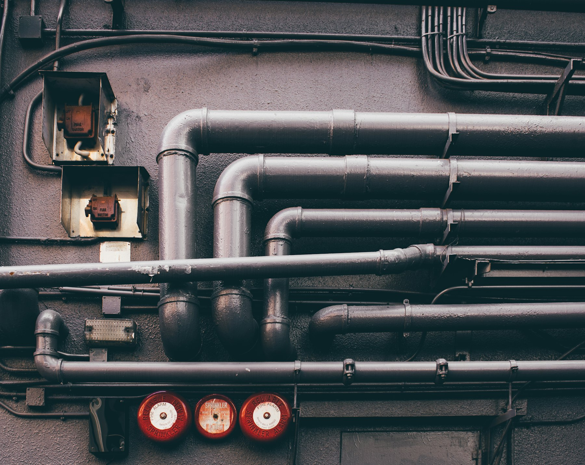

★★★★★
“They gave us a date in writing in March and handed over the keys on that date in October. After two bad experiences with other builders I did not think that was possible any more.”
D. MarquezCustom home

So we own the schedule. Dirt to drywall under one contract — our machines, our operators, our crews, and nobody on the critical path waiting for a sub to show up.

the iron.

We took the equipment in‑house in 2014. Nobody waits on a sub who never shows.
Most general contractors are brokers. They bid the job, mark it up, and hand it to whoever answers the phone that week. When that sub falls behind, the schedule is already gone and there is nothing anyone can do about it.
We went the other way. Quest owns its excavators, its forms and its finish crews. The people who cut your pad are on our payroll, and the superintendent who walks the job on Monday is the same one who hands you the keys.
It costs us more to carry. It means we turn down work in busy seasons rather than promise dates we cannot hold. It is also the only reason we can put a completion date in writing and keep it.
Every project gets a written Friday update — what moved, what did not, and what it means for the date on your contract.
Everything on the critical path is ours. The rest we manage under the same contract and the same superintendent.
Clearing, cut and fill, utilities and pad prep. Our iron, our operators, our schedule.

Footings, stem walls, slabs and flatwork. Formed, poured and finished by crews we employ.

Framing, dry‑in, mechanical coordination and finish carpentry through to punch.

Retail and office build‑outs on landlord timelines, including night and weekend work.


A rented machine arrives when the rental yard says so. Ours arrives when the superintendent says so. That single difference is worth about three weeks on a typical ground‑up build.
Three from the last quarter, unedited apart from surnames shortened at the owners’ request.
“They gave us a date in writing in March and handed over the keys on that date in October. After two bad experiences with other builders I did not think that was possible any more.”
“The Friday update email is worth the contract on its own. I always knew exactly where we were, including the weeks when the news was bad.”
“Same superintendent from the first walk to the punch list. He knew every detail of our job without looking anything up. That never happens.”
Let’s break ground.
Send us the scope, the address and the date you want to be standing in it. You will hear back from a person inside one business day.
Request a Bid →